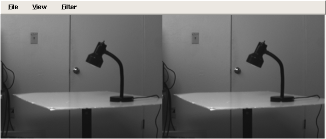

|
|||||||
| [ Home ] | [ Software ] | [ Curriculum ] | [ Hardware ] | [ Community ] | [ News ] | [ Publications ] | [ Search ] |
|
1. Image Processing CollectionsThis page documents how to make and use image collections in Pyro.
1.1. SIVALThis information provided by Grant Braught (braught AT dickinson.edu). 1. Download and unpack the unprocessed SIVAL images from www.cs.wustl.edu/~sg/accio/SIVAL.html 2. Copy into the SIVAL directory the two scripts: 3. Edit the makeFakeCameraFiles.bash script to set the desired image size.
4. Run the makeFakeCameraFiles.bash script.
5. Edit the makePyroDevices.bash file to set the path to the FakeCameras directory.
6. Run the makePyroDevices.bash script.
7. Fire up Pyrobot and have fun!
1.2. Stereo ImagesPyro now comes with a StereoCamera device that can do depth perception based on a pixel-to-pixel algorithm. It asks for the index of two other cameras that have already been started in Pyro.
If you have real cameras, simply load them, and start the StereoCamera like so (this assumes two Video for Linux cameras):
self.robot.startDevice("V4LCamera0")
self.robot.startDevice("V4LCamera1")
self.robot.startDevice("Stereo")
or from the command line:
pyrobot -r Test -d V4LCamera0,V4LCamera1,Stereo Select indexes 0 and 1 (the defaults). If you would like to test this feature using FakeCameras, then you will need to construct a special set of images, and then split them using yet another camera device. The reason that you cannot just use two Fake Camera objects is that the pairs of stereo need to be synced. To sync the pairs of images, create a set of PPM files with the left and right images side by side, as show in this image:  A sample set of images is provided in the TutorialCameraStereo device. Next, we need to split the images from camera0 into the left and right components. Load the TwowayCamera device, and select index 0 (the first camera) to split. There is also a FourwayCamera if you have a quad video input feed. Finally, load the Stereo device and select the last two cameras to combine into a stereo image. You can load it all up at the command line:
pyrobot -r Test -d TutorialCameraStereo,TwowayCamera,Stereo and use index 1 and 2 (the split views of 0). Here is a sample of the above running. Depth is shown as grayscale---the whiter the pixel the closer to the camera it is perceived:
The algorithm, base code, and test images are provided at vision.stanford.edu/~birch/p2p/
|
| [ Home ] | [ Software ] | [ Curriculum ] | [ Hardware ] | [ Community ] | [ News ] | [ Publications ] | [ Search ] |
 View Wiki Source | Edit Wiki Source | Mail Webmaster
View Wiki Source | Edit Wiki Source | Mail Webmaster | |||||||